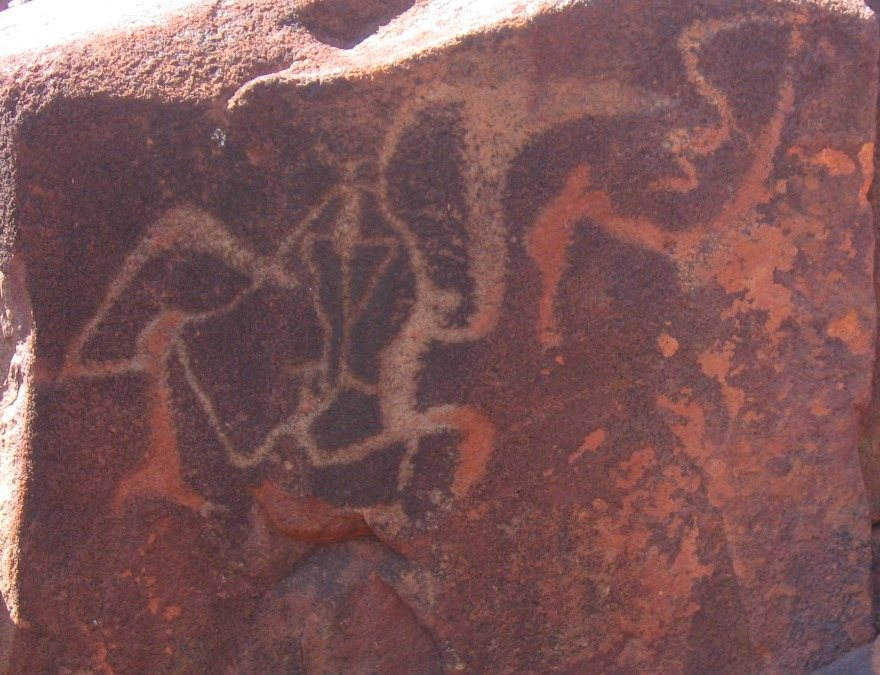

Deep dives / Australia & Pacific
Lutruwita / Tasmania: Ice-Age Caves, Bass Strait Separation & Aboriginal Survival
Across the exposed Bassian land bridge before 41,600 years ago, Palawa ancestors entered Lutruwita—the southernmost ice-age frontier on Earth—before sea-level rise severed Bass Strait ~14–10 ka ago.
Landscape fire cores, Southwest karst refugia (Kutikina, Warreen, Nunamira), eastern Holocene sites, kelp *rikawa* water craft, and 1824–1847 colonial war and exile.
Landscape and objects


Murujuga's deep-gorge ironstone boulders carry over a million Aboriginal engravings spanning millennia of changing sea levels.Tradimus · Image source · CC0 · Full-size image

The whole area in view
Pleistocene karst caves, eastern open swamps, Bass Strait islands, and 19th-century exile landscapes of Lutruwita.
NW Tasmania Fire & Pollen Archives
41,600 BP onward
Peat and lake charcoal cores document human fire regimes opening cool rainforests from 41.6 ka across northern Lutruwita. [1] [2] [3]
-41.05°, 145.10°Kutikina Cave (Franklin River)
c. 20,000–14,800 BP
Southernmost LGM hunters harvesting Bennett's wallaby near alpine glaciers and transporting Darwin meteorite glass 100 km. [4] [5] [6]
-42.53°, 145.77°Warreen & Southern Forests Karst
c. 35,000–13,000 BP
Stratified Maxwell and Florentine valley caves recording glacial fauna bone fracture, ochre, and high-latitude adaptation. [7] [8] [9]
-42.65°, 146.15°Eastern Lutruwita & Nicholas Swamp
Holocene to 1830 CE
Coastal grassland mosaics, Fleurieu island watercraft crossings, and enduring *rikawa* bull-kelp vessel technology. [10] [11] [12] [13]
-41.52°, 148.07°Midlands Black War & Wybalenna (Flinders Island)
1824–1847 CE
Guerrilla resistance across Tasmania's Settled Districts culminating in the 1830 Black Line and Flinders Island exile. [14] [15] [16] [17]
-40.02°, 147.92°
From glacial karst hunters to island resilience
By 41,600 years ago Aboriginal cultural burning cleared closed temperate rainforest tracts across northern Lutruwita. As ice-age winds intensified, families sheltered inside Southwest limestone caverns—Kutikina, Warreen, Nunamira—specializing in Bennett's wallaby marrow extraction and transporting impactite Darwin glass across icy river valleys. [1] [7] [4] [18]
Rising Bass Strait waters severed Tasmania around 14–10 ka. Palawa communities flourished along open eastern plains and offshore Hunter/Fleurieu islands, crafting bark canoes and bull-kelp *rikawa* water vessels prior to the 1824–1832 Black War and survival beyond colonial containment. [10] [12] [14] [19]
| Horizon | Dates | Archaeological & Historical Record | Sources |
|---|---|---|---|
| Bassian Arrival & Burning | 41,600 cal BP | Peat/lake charcoal shift in NW Tasmania | [1] |
| Karst Caves (Warreen / Kutikina) | 35,000–13,000 BP | Wallaby hunting & Darwin glass transport | [7] [4] |
| Black War & Exile | 1824–1847 CE | Guerrilla defense, Black Line & Wybalenna persistence | [14] [16] |
Cultural fire landscapes & coastal watercraft
Following Bass Strait's flooding ~14–10 ka, eastern Lutruwita communities sustained open grassy woodlands via selective firing while fabricating sturdy bark canoes and thick bull-kelp *rikawa* water containers to forage outer Hunter and Fleurieu islands. [3] [11] [12]
Black War resistance, Wybalenna & historiography
From 1824–1832 Palawa bands mounted coordinated resistance against settler pastoral intrusion across the Midlands, surviving the 1830 Black Line and Flinders Island exile (Wybalenna) to assert continuing heritage. [14] [15] [16]
Explore in the interactive atlas
Open this era on global Explore ↗ Open Australia & Pacific atlas ↗ Climate, sea level & ice-sheet context ↗
Continue exploring
- Pleistocene Australia: Madjedbebe, Kimberley Shelters, Willandra & Arid Pioneers — First Nations settlement across tropical Arnhem Land, Kimberley coastlands, Flinders Ranges, and the Murray–Darling lakes from 65,000 years ago onward.
- Conflict & Resistance in Australia: From Pre-Colonial Evidence to the Frontier Wars — Bioarchaeological conflict trauma along the Darling River paired with 1794–1900 archaeological and historical records of Frontier Wars resistance.
- Indigenous Australian Origin Stories: The Dreaming (Tjukurpa, Wangarr, Bugarrigarra, Nyitting & Lutruwita) — Sacred creation, Songline and emergence accounts across Arnhem Land, Central & Western Deserts, Kimberley, Southeast Australia, Noongar Southwest, Tasmania (Lutruwita) and Torres Strait — documented from public Indigenous, ethnographic and literary collections.
Sources for this guide
- Matthew Adesanya Adeleye (2024) · Landscape burning facilitated Aboriginal migration into Lutruwita/Tasmania 41,600 years ago
- S. Cooley (2024) · Rainforest response to glacial terminations before and after human arrival in Lutruwita (Tasmania)
- Michael‐Shawn Fletcher (2024) · Reconciling 22,000 years of landscape openness in a renowned wilderness
- Simon Holdaway (1995) · Cyclical patterns in the Pleistocene human occupation of Southwest Tasmania
- Richard Cosgrove (1995) · Late Pleistocene behavioural variation and time trends: the case from Tasmania
- Rebe Taylor (2014) · Archaeology and Aboriginal Protest: The Influence of Rhys Jones's Tasmanian Work on Australian Historiography
- Rhys Jones (1988) · An Archaeological Reconnaissance of Karst Caves within the Southern Forests Region of Tasmania, September 1987.
- Jim Allen (1988) · New Archaeological Data from the Southern Forests Region, Tasmania: A Preliminary Statement
- J. Garvey (2008) · The first record of palaeopathology from the zooarchaeological record of late Pleistocene, southwest Tasmania
- Richard Cosgrove (2024) · The archaeology of eastern Lutruwita (Tasmania)
- Matthew Adesanya Adeleye (2023) · Landscapes created by millennia of cultural land use in the Fleurieu Group of Islands, Tasmania—a knowledge baseline for current and future land management under changing climates
- Stéphanie Leclerc-Caffarel (2024) · rikawa: Tasmanian Aboriginal Kelp Water Containers
- Patrick Moss (2026) · Late Quaternary environments of Nicholas Swamp, Nicholas Range, eastern Tasmania/Lutruwita, Australia
- Matthew Graves (2017) · Black Wars and White Settlement: the Conflict over Space in the Australian Commemorative Landscape
- Rebe Taylor (2015) · The Black War: Fear, Sex and Resistance in Tasmania / The Last Man: A British Genocide in Tasmania
- Kristyn Harman (2018) · ‘As Much as They Can Gorge’: Colonial Containment and Indigenous Tasmanian Mobility at Oyster Cove Aboriginal Station
- Roger W. Byard (2024) · Estimating early contact‐era populations for lutruwita (Tasmania)
- Ian D. Thomas (1993) · Late Pleistocene Environments And Aboriginal Settlement Patierns In Tasmania
- Lyndall Ryan (2010) · ‘Hard evidence’: the debate about massacre in the Black War in Tasmania
- Richard Cosgrove (1985) · New Evidence for Early Holocene Aboriginal Occupation in Northeast Tasmania
- Peter Sims (2013) · No Reprieve for Tasmanian Rock Art
- Penelope Jones (2019) · Mapping Tasmania's cultural landscapes: Using habitat suitability modelling of archaeological sites as a landscape history tool
- Nicholas Dean Brodie (2017) · Other picture boards in Van Diemen’s Land: The recovery of lost illustrations of frontier violence and relationships
Sources checked and linked above; geological and historical dating methods follow the primary papers.